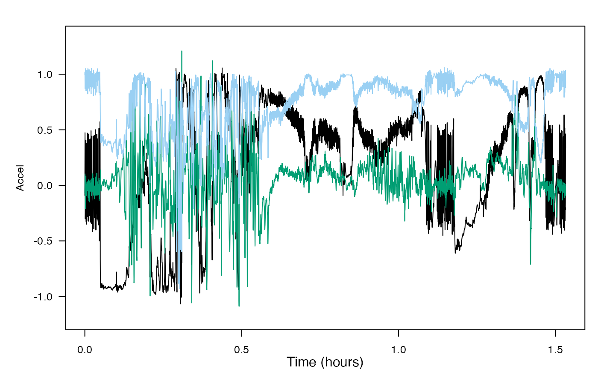

Recursive sampling rate decimator. This function can be run iteratively over a long data set, e.g., to decimate an entire recording that is too large to be read into memory.
Arguments
- x
A vector, matrix, or tag data list containing the signal(s) to be decimated. If x is a matrix, each column is decimated separately. If inputs
dfandZare both provided, then the value ofdfstored inZwill override the user-provideddf.- df
The decimation factor. The output sampling rate is the input sampling rate divided by df. df must be an integer greater than 1. df can also be a three element vector in which case: df(1) is the decimation factor; df(2) is the number of output samples spanned by the filter (default value is 12). A larger value makes the filter steeper; df(3) is the fractional bandwidth of the filter (default value is 0.8) relative to the output Nyquist frequency. If df(2) is greater than 12, df(3) can be closer to 1.
- Z
The 'state' list that is generated by a previous call to decz. This is how the function keeps track of filter internal values (i.e., memory) from call-to-call.
- nf
The number of output samples spanned by the filter (default value is 12). A larger value makes the filter steeper.
- frbw
The fractional bandwidth of the filter (default value is 0.8) relative to the output Nyquist frequency. If
nfis greater than 12,frbwcan be closer to 1.
Value
A list with elements:
y: The decimated signal vector or matrix. It has the same number of columns as x but has, on average, 1/df of the rows.
Z: The state list (for internal tracking of filter internal values). Contains elements df (the decimation factor), nf (used to compute the filter length), frbw (the bandwidth of the filter relative to the new Nyquist frequency), h (the FIR filter coefficients), n (the filter length), z (padded signal used for filtering), and ov ("overflow" samples to be passed to future iterations).
Details
The first time decz is called, use the following format: y = decz(x,df). The subsequent calls to decz for contiguous input data are: decz(x,Z). The final call when there is no more input data is: decz(x = NULL, Z = Z). Each output y in the above contains a segment of the decimated signal and so these need to be concatenated.
Decimation is performed in the same way as for decdc. The group delay of the filter is removed. For large decimation factors (e.g., df much greater than 50), it is better to perform several nested decimations with lower factors.
Examples
plott_base(list(Accel = beaked_whale$A)) # acceleration data before decimation

a_rows <- nrow(beaked_whale$A$data)
a_ind <- data.frame(start = c(1, floor(a_rows / 3), floor(2 * a_rows / 3)))
a_ind$end <- c(a_ind$start[2:3] - 1, a_rows)
df <- 10
Z <- NULL
y <- NULL
for (k in 1:nrow(a_ind)) {
decz_out <- decz(
x = beaked_whale$A$data[c(a_ind[k, 1]:a_ind[k, 2]), ],
df = df, Z = Z
)
df <- NULL
Z <- decz_out$Z
y <- rbind(y, decz_out$y)
}